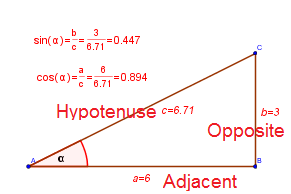

Right-Triangle Definitions:

$$ \sin \alpha = \frac{\text{Opposite}}{\text{Hypotenuse}} $$
$$ \cos \alpha = \frac{\text{Adjacent}}{\text{Hypotenuse}} $$
$$ \tan \alpha = \frac{\text{Opposite}}{\text{Adjacent}} $$
$$ \csc \alpha = \frac{1}{\sin\alpha} = \frac{\text{Hypotenuse}}{\text{Opposite}} $$
$$ \sec \alpha = \frac{1}{\cos\alpha} = \frac{\text{Hypotenuse}}{\text{Adjacent}} $$
$$ \cot \alpha = \frac{1}{\tan\alpha} = \frac{\text{Adjacent}}{\text{Opposite}} $$
Reduction Formulas:
$$ \sin(-x) = -\sin(x) $$
$$ \cos(-x) = \cos(x) $$
$$ \sin\left(\frac{\pi}{2} - x\right) = \cos(x) $$
$$ \cos\left(\frac{\pi}{2} - x\right) = \sin(x) $$
$$ \sin\left(\frac{\pi}{2} + x\right) = \cos(x) $$
$$ \cos\left(\frac{\pi}{2} + x\right) = -\sin(x) $$
$$ \sin(\pi - x) = \sin(x) $$
$$ \cos(\pi - x) = -\cos(x) $$
$$ \sin(\pi + x) = -\sin(x) $$
$$ \cos(\pi + x) = -\cos(x) $$
Basic Identities:
$$ \sin^2x + \cos^2x = 1 $$
$$ \tan^2x + 1 = \frac{1}{\cos^2x} $$
$$ \cot^2x + 1 = \frac{1}{\sin^2x} $$
Sum and Difference Formulas:
$$ \sin(\alpha + \beta) = \sin\alpha \cdot \cos \beta + \sin\beta \cdot \cos\alpha $$
$$ \sin(\alpha - \beta) = \sin\alpha \cdot \cos \beta - \sin \beta \cdot \cos\alpha $$
$$ \cos(\alpha + \beta) = \cos\alpha \cdot \cos \beta - \sin\alpha \cdot \cos\beta $$
$$ \cos(\alpha - \beta) = \cos\alpha \cdot \cos \beta + \sin\alpha \cdot \cos\beta $$
$$ \tan(\alpha + \beta) = \frac{ \tan\alpha + \tan\beta}{1 - \tan\alpha \cdot \tan\beta } $$
$$ \tan(\alpha - \beta) = \frac{ \tan\alpha - \tan\beta}{1 + \tan\alpha \cdot \tan\beta } $$
Double Angle and Half Angle Formulas:
$$ \sin(2\,\alpha) = 2 \cdot \sin\alpha \cdot \cos\alpha $$
$$ \cos(2\,\alpha) = \cos^2\alpha - \sin^2\alpha $$
$$ \tan(2\,\alpha) = \frac{2\,\tan\alpha}{1 - \tan^2\alpha} $$
$$ \sin \frac{\alpha}{2} = \pm \sqrt{\frac{1-\cos\alpha}{2}} $$
$$ \cos \frac{\alpha}{2} = \pm \sqrt{\frac{1+\cos\alpha}{2}} $$
$$\tan \frac{\alpha}{2} = \frac{1 - \cos\alpha}{\sin\alpha} = \frac{\sin\alpha}{1 - \cos\alpha} $$
$$\tan \frac{\alpha}{2} = \pm \sqrt{\frac{1 + \cos\alpha}{1 - \cos\alpha} } $$
Other Useful Trig Formulas:
Law of sines:
$$ \frac{\sin\alpha}{\alpha} = \frac{\sin\beta}{\beta} = \frac{\sin\gamma}{\gamma} $$
Law of cosines:
$$ \begin{aligned} a^2 = b^2 + c^2 - 2\cdot b\cdot c\cdot \cos\alpha \\ b^2 = a^2 + c^2 - 2\cdot a\cdot c\cdot \cos\beta \\ c^2 = a^2 + b^2 - 2\cdot a\cdot b\cdot \cos\gamma \end{aligned} $$
Area of triangle:
$$ A = \frac{1}{2} a\,b\, \sin\gamma $$